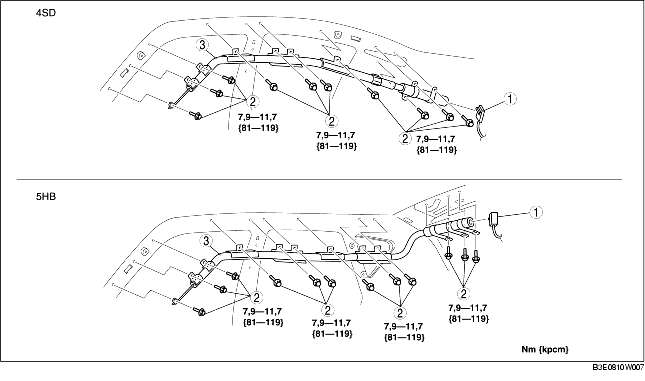

DEMONTERING/MONTERING AV GARDINAIRBAG-MODULEN
B3E081000171W01
-
Varni ng
-
• Felaktig hantering av airbagmodulen kan oavsiktligt utlösa airbagen, vilket kan skada dig allvarligt. Läs varningar och försiktighetsåtgärder beträffande service innan du hanterar airbagmodulen. (Se VARNING VID SERVICE.) (Se FÖRSIKTIGHETSÅTGÄRDER VID SERVICE.)
1. Vrid tändningslåset till LOCK.
2. Koppla loss batteriets minuskabel och vänta i minst 1 minut.
3. Demontera följande delar:
-
(1) Konsol (4SD) (Se DEMONTERING/MONTERING AV KONSOL.)
-
(2) A-stolpens beklädnad (Se DEMONTERING/MONTERING AV A-STOLPENS BEKLÄDNAD.)
-
(3) Tröskelplåt fram (Se DEMONTERING/MONTERING AV FRÄMRE TRÖSKELPLÅT.)
-
(4) Bakre tröskelplåt (Se DEMONTERING/MONTERING AV BAKRE TRÖSKELPLÅT.)
-
(5) B-stolpens nedre beklädnad (Se DEMONTERING/MONTERING AV B-STOLPENS NEDRE BEKLÄDNAD)
-
(6) Övre förankringen på det främre bilbältet (Se DEMONTERING/MONTERING AV FRÄMRE SÄKERHETSBÄLTE.)
-
(7) B-stolpens övre beklädnad (Se DEMONTERING/MONTERING AV B-STOLPENS ÖVRE BEKLÄDNAD)
-
(8) Baksäte (Se DEMONTERING/MONTERING AV BAKSÄTE)
-
(9) Hjulhusets beklädnad (Se DEMONTERING/MONTERING AV HJULHUSETS BEKLÄDNAD.)
-
(10) Koffertens övre sidobeklädnad (5HB) (Se DEMONTERING/MONTERING AV KOFFERTLUCKANS SIDOBEKLÄDNAD.)
-
(11) C-stolpens beklädnad (Se DEMONTERINGMONTERING AV KLÄDSEL PÅ C-STOLPE.)
-
(12) Kartbelysning (Se DEMONTERING/MONTERING AV KARTBELYSNINGEN.)
-
(13) Innerbelysning (Se DEMONTERING/MONTERING AV INNERBELYSNING.)
-
(14) Solskydd (Se DEMONTERING/MONTERING AV SOLSKYDD.)
-
(15) Hjälphandtag (Se DEMONTERA/MONTERA HJÄLPHANDTAG.)
-
(16) Innertak (Se DEMONTERING/MONTERING AV INNERTAK)
-
(17) Huvudkudde (Se DEMONTERING/MONTERING AV HUVUDSKYDDSKUDDEN.)
4. Demontera i den ordning som anges i tabellen.

|
1
|
Kontakt
|
|
2
|
Bult
|
|
3
|
Gardinairbag-modul
|
5. Montera i omvänd ordning mot demonteringen.
6. Med tändningslåset i läge ON, kontrollera att airbag-systemets varningslampa tänds i cirka 6 s och sedan släcks.
-
• Om varningslampan till airbagsystemet inte fungerar normalt, använd det inbyggda diagnossystemet (för airbagsystem) och gör en kontroll av systemet.